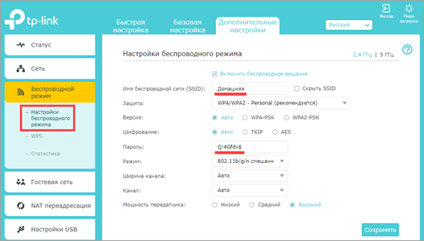

Как раздать интернет
В этом уроке я покажу, как раздать интернет с одного устройства на другое. Мы научимся раздавать Wi-Fi с телефона и ноутбука, через роутер, подключаться к стационарному ПК.
С телефона Android
Способ 1: через Wi-Fi
1. В меню телефона откройте «Настройки».
2. Нажмите на вкладку «Ещё».
3. Перейдите в режим модема.
4. Выберите «Точка доступа Wi-Fi».
5. Активируйте переключатель в положение «Вкл».
Автоматически появится рандомное название новой сети и пароль.
При желании настройки можно изменить в пункте «Настройка точки доступа Wi-Fi».
6. Найдите новую сеть и попробуйте к ней подключиться.
Способ 2: через USB кабель
1. Подключите телефон через кабель в USB к компьютеру.
2. Откройте режим модема.

3. Активируйте переключатель в пункте «USB-модем».

4. Подождите пока произойдет соединение, и попробуйте выйти в интернет.
Способ 3: через Bluetooth
Этот вариант поможет подключить ноутбук, если не получилось соединиться через Wi-Fi сеть.
1. В режиме модема активируйте «Bluetooth-модем».
2. Включите Bluetooth на ПК, выполните поиск телефона и соедините устройства.
Способ 4: через приложение
На современных смартфонах подключение легко настраивается встроенными средствами без установки дополнительного ПО. Так что этот вариант больше пойдет для старых устройств, в которых нет раздачи интернета.
Приложения можно загрузить в магазине Google Play.
Osmino

1. Придумайте имя сети и пароль, нажмите кнопку «Раздать».
Приложение активирует точку доступа, к которой вы сможете подключиться.
FoxiFi
Ещё одно приложения для превращения телефона в Wi-Fi точку доступа. После запуска в поле «Network name» придумайте имя сети, в поле «Password» укажите пароль. Активируйте пункт «WiFi Hotspot» для включения точки доступа.
С ноутбука
Windows 10
1. В меню Пуск откройте «Параметры».
2. Перейдите в раздел «Сеть и Интернет».

3. Перейдите во вкладку «Мобильный хот-спот».
* В строке «Имя сети» появится имя точки доступа.
* В строке «Сетевой пароль» - пароль для подключения к ней.
При желании эти данные легко меняются кнопкой «Изменить».
4. Активируйте переключатель в положение «Вкл.».
На этом настройки завершены. Подключить можно до 8 устройств.
Windows 7
Тут все происходит немного сложнее: для запуска мобильного хот-спота потребуется выполнить пару команд.
1. В меню Пуск введите Командная строка и откройте приложение от имени администратора.
2. Напечатайте команду:
netsh wlan set hostednetwork mode=allow ssid=My_Wi-Fi key=P@$$WORD
где MY_Wi-Fi - имя сети, а P@$$WORD - пароль для входа.
Нажмите клавишу Enter. Появится сообщение об успешном разрешении доступа к беспроводной сети.
3. Для активации созданной точки доступа вводим команду: netsh wlan start hostednetwork
Готово! Попробуйте найти и подключиться к новой сети ноутбука.
При помощи программы
Метод будет полезным для начинающих пользователей, так как все параметры настраиваются в визуальном режиме. Одна из таких бесплатных и функциональных программ MyPublicWiFi. Скачать можно с официального сайта mypublicwifi.com
1. Запустите программу.
2. В переключателе «Hotspot mode» установите «Virtual Wi-Fi Hotspot».
3. В переключателе «Network Mode» можно выбрать несколько режимов доступа к сети. Для раздачи интернета подойдет «Router Mode (NAT)».
4. В «Internet Connection» выбираем адаптер с подключенным интернетом.
5. В поле «Network name SSID» придумайте имя новой сети.
6. В поле «Network key» установите пароль.
7. После всех настроек жмем «Set up and Start Hotspot».
8. В следующем окне можно оставить настройки по умолчанию и нажать «Set up».
Настройка завершена, пробуйте подключиться к новой сети.
Через роутер
В качестве примера воспользуемся современным недорогим устройством TP-Link.
Сначала подключите кабель источник от провайдера в гнездо «WAN» или «Internet».
Подключите один конец сетевого кабеля в любой свободный порт «Ethernet». Второй конец подключите в сетевую карту компьютера для создания соединения и первоначальной настройки.
Откройте браузер и перейдите по адресу, указанному на задней стороне роутера.
Введите логин и пароль.
Во вкладке «Сеть» перейдите в «Интернет». Убедитесь, что вы автоматически получили IP адрес от провайдера или введите данные вручную (они указаны в договоре).
Во вкладке «Беспроводной режим» откройте настройки. Придумайте имя для Wi-Fi сети, установите пароль для авторизации.
Сохраните изменения, и перезагрузите устройство.
Подключитесь к новой сети и у вас должен появиться интернет.
На компьютере с помощью кабеля
Шаг 1: проверка работы службы брандмауэра Windows
1. В меню Пуск введите services (службы) и откройте приложение от имени администратора.
2. Найдите службу «Брандмауэр Защитника Windows». Дважды щелкните по ней для входа в настройки.
3. Убедитесь, что служба выполняется. Если нет, запустите её вручную и установите тип запуска «Автоматически».
Шаг 2: раздача интернета
1. Нажмите по значку адаптера правой клавишей мышки и откройте «Параметры сети и Интернет».
2. Перейдите в «Настройка параметров адаптера».
В новом окне у вас должно отобразиться два адаптера: в один идет подключение с интернетом, в другой - выход в локальную сеть.
3. Дважды щелкните по адаптеру, подключенному к интернету.
4. Перейдите в «Свойства».
5. Нажмите на вкладку «Доступ». Активируйте галочки в пунктах «Разрешить другим пользователям сети использование интернета и управление общим доступом» и нажмите ОК.
Второму адаптеру будет автоматически присвоен IP адрес 192.168.137.1
На этом настройки завершены.
Шаг 3: настройка клиентских ПК для получения интернета
1. Перейдите в настройки параметров адаптера.

2. Нажмите на «Свойства» и дважды щелкните по «IP версии 4 TCP/IP».
3. Установите переключатель в пункт «Использовать следующий IP адрес» и установите значения в следующие поля:
- IP-адрес: 192.168.137.2 (где цифра 2 будет новым адресом вашего ПК)
- Маска подсети: 255.255.255.0
- Основной шлюз: 192.168.137.1 (адрес ПК с интернетом)
4. Установите переключатель в пункт «Использовать следующие DNS адреса». В предпочитаемый DNS-сервер введите 192.168.137.1 (адрес ПК с интернетом).
Нажмите «ОК» и проверьте в браузере доступ в интернет.
На заметку. На остальных компьютерах проводим аналогичные действия. Только меняем последнюю цифру в поле «IP-адрес» на следующую по увеличению, чтобы она не совпадала с адресами других в сети ПК.
Через прокси сервер
Способ подойдет для любого компьютера с подключенным интернетом. Плюс метода: не нужно открывать доступ для всех пользователей. Минус: через прокси сервер не всегда могут подключиться приложения на телефоне.
В качестве примера воспользуемся бесплатной программой 3proxy (3proxy.ru).
1. Загружаем архив для 32 или 64 разрядной версии ОС. Распаковываем его.
2. Далее нужно создать специальный конфигурационный файл в директории с программой. Для этого открываем Блокнот и вставляем в него код:
auth none
log
proxy
3. Сохраняем файл во внутреннюю директорию: папку «bin» с названием 3proxy.cfg.
4. Запускаем командную строку от имени администратора и выполняем команды.

cd C:\3proxy\bin - для перехода в директорию с программой.
3proxy.exe 3proxy.cfg - для исполнения программой конфигурационного файла.
Появится сообщение, что приложение запущено и принимает соединения на порт 3128.
5. На клиентских компьютерах переходим в параметры сети и интернет и открываем вкладку «Прокси-сервер».
6. В разделе «Настройка прокси вручную» активируем переключатель «Использовать прокси-сервер».
- В поле «Адрес» введите IP адрес компьютера, где запущен прокси-сервер.
- В поле «Порт» вводим 3128.
7. Нажимаем «Сохранить» и пробуем войти в интернет.
Я показал самые простые шаги по настройке прокси сервера. На самом деле, с помощью него можно ограничить доступ отдельным пользователям, блокировать сайты и настроить другие функции. С подробной инструкцией можно ознакомиться в разделе «Документация» ( 3proxy.ru/documents ).
Справочная информация
Во время раздачи интернета происходит маршрутизация трафика с нескольких устройств к источнику. Лучшим и безопасным решением будет приобретение роутера, который не займет много места, и сможет передавать трафик как через локальную, так и через беспроводную сеть
Но можно обойтись и без роутера: ОС Windows позволяет раздавать трафик встроенными средствами. Единственное условие: в компьютере должно быть установлено две сетевые карты. Одна для приема интернета, вторая - для раздачи.
Аналогично происходит раздача через Wi-Fi адаптер: к сетевой карте подключается кабель с интернетом, через Wi-Fi адаптер происходит его выход.
Если у вас в качестве источника интернета используется 4G модем, то иметь дополнительную сетевую карту необязательно.
На телефоне все происходит точно также: в качестве приемника выступает сим карта с подключенным 4G, а выходящий трафик проходит через встроенный Wi-Fi модуль.